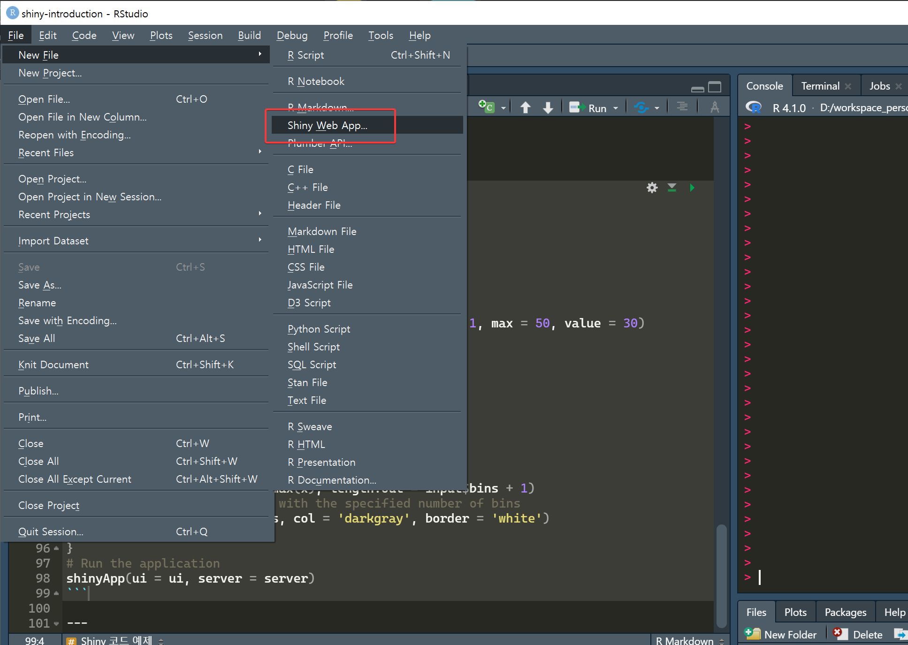

library(shiny)
# UI 정의
ui <- fluidPage(
titlePanel("Old Faithful Geyser Data"),
sidebarLayout(
sidebarPanel(
sliderInput("bins", "Number of bins:",
min = 1, max = 50, value = 30)
),
mainPanel(plotOutput("distPlot"))
)
)
# Server 로직 정의
server <- function(input, output) {
output$distPlot <- renderPlot({
x <- faithful[, 2]
bins <- seq(min(x), max(x), length.out = input$bins + 1)
hist(x, breaks = bins, col = 'darkgray', border = 'white')
})
}
# 앱 실행
shinyApp(ui = ui, server = server)샤이니 Shiny
R로 만드는 대화형 웹시각화
홍성학
Korea R User Group
8/9/21
목차
- 샤이니 소개
- 샤이니 기본 구조
- 반응성 (Reactivity)
- 주요 UI 컴포넌트
- 생태계 패키지
- 고급 기능
- 배포 및 성능 최적화
- 실습 과제
샤이니는?
- R언어로 대화형 웹 애플리케이션을 만드는데 쓰는 패키지
- RStudio 사에서 제작한 패키지
- Shiny server 까지는 무료

샤이니 장점
- R언어로 웹 애플리케이션을 제작할 수 있음
- 짧고 간단한 코드로 대화형 시각화를 구현할 수 있음
- 분석에 사용하던 코드를 웹 애플리케이션으로 빠르게 바꿀 수 있음

샤이니 단점
- 학습 장벽이 있음
- 복잡한 웹 애플리케이션을 작성하기 어려움
- 애플리케이션의 속도가 느린 편
Shiny 코드 생성 방법
RStudio에서 “메뉴 → File → New File → Shiny Web App..” 선택
기본 코드 구조
UI 파트
- 샤이니 웹앱의 눈에 보이는 부분을 처리
- 타이틀, 상자, 드롭박스와 같은 표현 요소를 배열
Server 파트
- UI에서 전달 받은 Input을 사용해서 코드를 실행
- 코드를 실행하고 결과물을 UI로 전달
반응성이란?
- 사용자의 입력을 받고 꼭 필요한 부분의 코드만 재실행
- 갱신이 필요한 결과물을 다시 만들어서 그 부분만 바꿔치기
- 이 작업이 자동으로 연쇄적으로 실행
- Shiny는 R로만 작동하는 것처럼 보이지만 사실은 JavaScript가 내부에서 깊이 관여
반응성 함수들
server <- function(input, output) {
# 반응형 데이터
filtered_data <- reactive({
subset(mtcars, mpg > input$mpg_threshold)
})
# 이벤트 반응
observeEvent(input$reset_button, {
updateSliderInput(session, "mpg_threshold", value = 20)
})
# 부작용이 있는 반응형 표현식
observe({
print(paste("Current threshold:", input$mpg_threshold))
})
}입력 컴포넌트 (Input Components)
# 다양한 입력 요소들
textInput("text", "텍스트 입력")
numericInput("num", "숫자 입력", value = 10)
selectInput("select", "선택", choices = c("A", "B", "C"))
checkboxInput("checkbox", "체크박스", value = FALSE)
radioButtons("radio", "라디오 버튼", choices = c("X", "Y", "Z"))
dateInput("date", "날짜 선택")
fileInput("file", "파일 업로드")
sliderInput("slider", "슬라이더", min = 0, max = 100, value = 50)출력 컴포넌트 (Output Components)
레이아웃 시스템
주요 확장 패키지
- DT: 인터랙티브 데이터테이블 생성
- plotly: 인터랙티브 그래프 생성
- leaflet: 인터랙티브 지도 생성
- shinydashboard: 대시보드 레이아웃 생성
- shinyWidgets: 다양한 추가 위젯 제공
- shinyjs: JavaScript 기능 추가
DT 패키지 예제
plotly 패키지 예제
leaflet 패키지 예제
모듈화 (Modules)
# 모듈 UI
chartUI <- function(id) {
ns <- NS(id)
plotOutput(ns("plot"))
}
# 모듈 서버
chartServer <- function(id, data) {
moduleServer(id, function(input, output, session) {
output$plot <- renderPlot({
plot(data())
})
})
}
# 메인 앱에서 모듈 사용
ui <- fluidPage(chartUI("chart1"))
server <- function(input, output, session) {
data <- reactive(mtcars)
chartServer("chart1", data)
}사용자 정의 JavaScript
데이터 처리 및 파일 업로드
배포 방법
1. shinyapps.io (클라우드 배포)
2. Shiny Server (자체 서버)
- 오픈소스 버전 무료 사용 가능
- 상용 버전(Shiny Server Pro) 추가 기능 제공
성능 최적화
성능 향상 팁
- 반응성 최적화
- 불필요한 재계산 방지
isolate()함수 활용
- 메모리 관리
- 큰 데이터셋 처리 시 주의
- 메모리 사용량 모니터링
- 비동기 처리
future패키지 활용
보안 고려사항
디버깅 및 테스팅
- shinytest2 패키지로 자동화된 테스트
- testthat 패키지로 단위 테스트
간단한 데이터 탐색 앱 만들기
과제 요구사항
- 데이터 업로드 기능 구현
- 기본 통계 요약 표시
- 인터랙티브 그래프 생성
- 필터링 기능 추가
학습 리소스
온라인 자료
- 공식 문서: https://shiny.rstudio.com/
- Shiny 갤러리: https://shiny.rstudio.com/gallery/
- Mastering Shiny: https://mastering-shiny.org/
- Engineering Production-Grade Shiny Apps: https://engineering-shiny.org/
커뮤니티
- RStudio Community: https://community.rstudio.com/
- Stack Overflow: #shiny 태그
- 한국 R 사용자 모임: https://www.facebook.com/groups/KoreaRUsers/
실제 사용 사례
다양한 분야에서의 활용
- 비즈니스 대시보드 - KPI 모니터링, 실시간 데이터 시각화
- 과학 연구 - 데이터 탐색 도구, 통계 분석 인터페이스
- 교육 - 인터랙티브 학습 도구, 시뮬레이션 프로그램
- 정부 및 공공기관 - 정책 시뮬레이션, 공공 데이터 시각화
알아두면 좋은 사실
- 데이터와 코드가 메모리에 올라간 채로 시작
- 데이터를 계속해서 로딩해야 하거나 동적으로 바꾸려면 요령이 필요함
- Shiny의 UI 부분은 JavaScript로 작동함
- 복잡한 앱을 작성하려면 JavaScript를 알아야 하고 Shiny의 구조도 알아야 함
- ui.R과 server.R로 파트를 나눠서 코드를 작성할 수도 있음
질문 Question?
홍성학 (euriion@gmail.com)
감사합니다!